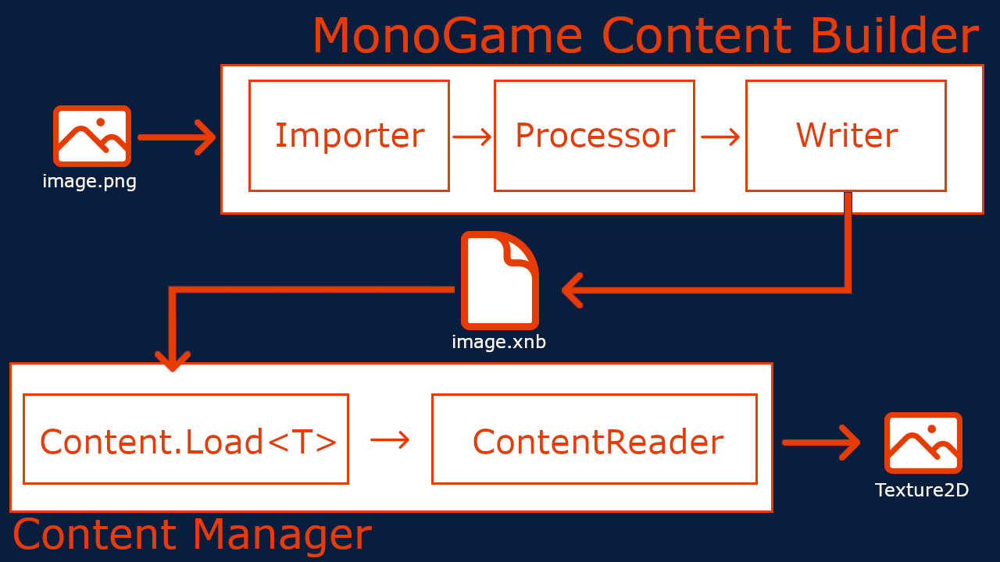

Content Pipeline Workflow
Before we get into creating the extension, it's important to understand what the Content Pipeline is. Many people confuse the term Content Pipeline to mean specifically the MGCB Editor, which is not the case. Instead, the Content Pipeline is the workflow that a content/asset for our game goes through from the content building step all the way to the content loading step at runtime within our game.
The following image is a high-level example of the Content Pipeline workflow for a single piece of content.

What we see here is the following
- The MonoGame Content Builder (MGCB) processes the content/asset
- First the image file goes through the configured Importer which imports all the data from the file itself.
- The result of the Importer is then passed to the configured Processor which does additional processing on the data that was imported.
- The result of the Processor is then passed to a Writer which takes the processed result and writes it to a binary encoded
.xnbfile
- Processed content
.xnbfiles are copied to our game project's build directory when we build our game project by theMonoGame.Content.Builder.TasksNuGet reference in our game. - During runtime of the game, when you want to load the asset with the
ContentManagerContent.Load<T>(string)is called whereTis the type of content loaded (Texture2Din the example above)- The
.xnbfile matching the name specified in theContent.Load<T>(string)method is loaded from disk and sent to the appropriateContentTypeReader - The
ContentTypeReaderreads the contents of the.xnbfile and produces the resulting object (TheTexture2Din the example above).
This is the entire Content Pipeline Workflow that all content assets go through. Hopefully that wasn't too confusing.
Now that we know the entire workflow, we can break down exactly the things we're going to need to create our own extension to load a custom file type
- An Importer
- A Processor
- A Writer
- A Reader
In the next sections we'll go over creating a new MonoGame Content Pipeline Extension project where we can create our ContentTypeImporter, ContentTypeProcessor and ContentTypeWriter. After that we'll move into where and how to create the ContentTypeReader.